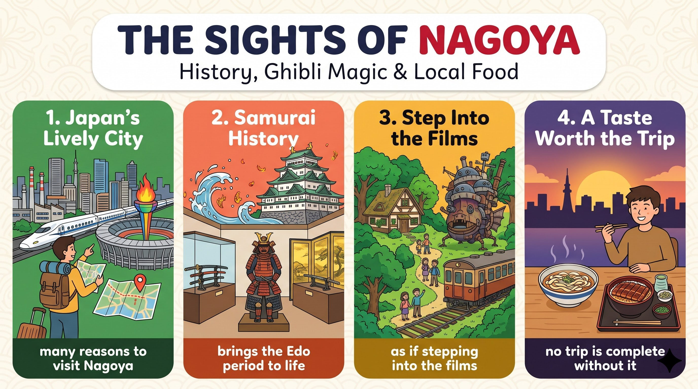

批評者認為名古屋主要是工業中心，城堡大多重建過，可能不夠有歷史感。
critics argue that支持者指出美術館的武士收藏讓歷史栩栩如生，據信能防火的金鯱仍是重要象徵。
brings history to life吉卜力公園用精心設計的空間取代刺激設施，讓遊客彷彿置身電影。
as if they were inside a film美食愛好者認為沒吃過在地料理就不完整；綜合正反，名古屋值得一遊。
it is clearly worth the tripMany people (S) + believe (V) + that ... (O)，so 後 they (S) + pass (V) + it (O) + by。
not as exciting as 是同級比較的否定；so 表結果。
Many people believe that（主句＋名詞子句）Nagoya is not as exciting as Tokyo or Osaka,（同級比較否定）so they often pass it by.（so 結果子句）語塊 1（許多人認為）➔ 語塊 2（名古屋不如東京或大阪精彩）➔ 語塊 3（因此常常略過它）
主句先翻「許多人認為」，後面接他們的看法。
not as／so + Adj. + as＝less + Adj. + than。Many people believe that ... 帶出議題，是學測論說文的標準開場。Critics (S) + argue (V) + that ... (O)。
rather than tourism 是比較連接詞片語。
Critics argue that（主句）the city is mainly a center of industry（that 子句主幹）rather than tourism.（rather than 片語）語塊 1（批評者主張）➔ 語塊 2（這座城市主要是工業中心）➔ 語塊 3（而不是觀光重鎮）
主句 Critics argue that 先翻「批評者主張」。
rather than 連接 a center of industry 和 tourism，兩邊都是名詞，結構對稱。rather than 和 instead of 都表「而不是」，但 rather than 前後可接相同詞性（名詞、動詞、片語），instead of 後面只能接名詞或 V-ing。
A rather than B：I prefer walking rather than driving.；argue that＝claim that。Critics argue that ...／Supporters say that ... 分出正反兩方，結構清楚。They (S) + point out (V) + that ... (O)。
They also point out that（主句）much of Nagoya Castle has been rebuilt,（that 子句一）so it may not feel truly historic.（so 結果）語塊 1（他們也指出）➔ 語塊 2（名古屋城大部分都重建過）➔ 語塊 3（所以感覺起來可能不太有歷史感）
They also point out that 先翻「他們也指出」。
historic（有歷史意義的）vs. historical（歷史的）；feel＋Adj.：The room feels cold.They also point out that ... 補充第二個論點，避免一直寫 and。supporters (S) + say (V) + that ... (O)。
However 是轉折副詞；that 名詞子句當受詞；for different kinds of travelers 修飾 attractions。
However, supporters say that（轉折＋主句）Nagoya offers plenty of attractions（that 子句）for different kinds of travelers.（for 介系詞片語）語塊 1（然而，支持者表示）➔ 語塊 2 前半（名古屋有許多）➔ 語塊 3 提前（適合各類旅客的）➔ 景點
However 先翻「然而」，告訴讀者要換到正方。
S + V. However, S + V.／S + V; however, S + V.However, supporters say that ... 轉向正方，段落邏輯一目了然。the Tokugawa Art Museum (S) + has (V) + an impressive collection (O)。
For example 是舉例副詞；that brings history to life 是主格關代子句，修飾 collection。
For example,（舉例副詞）the Tokugawa Art Museum has an impressive collection of samurai armor and weapons（主幹）that brings history to life.（主格關代子句）語塊 1（例如）➔ 語塊 2（德川美術館有令人驚豔的武士盔甲與兵器收藏）➔ 語塊 3（讓歷史栩栩如生）
For example 先翻「例如」，接著舉美術館當證據。
weapons，再往前是 collection。到底在修飾誰？看動詞：brings 加了 s，是單數，所以先行詞是 collection（是整批收藏讓歷史活起來）。關代子句的動詞單複數，就是判斷先行詞的線索。
a box of apples that is ...（box）vs. apples that are ...。For example, ... 舉證，論點才有說服力。The museum (S) + helps (V) + visitors (O) + understand (O.C.) + the period (O)。
in which the samurai clans held power 是介系詞＋關代子句。
The museum helps visitors understand（主幹）the period（受詞）in which the samurai clans held power.（介系詞＋關代子句）語塊 1（美術館幫助參觀者了解）➔ 語塊 3 提前（武士家族掌權的）➔ 語塊 2（那個時期）
主幹先翻「美術館幫助參觀者了解」。
the period，往右看 the samurai clans held power 是完整句，但原本的意思是 held power in the period。in 搬到 which 前，就成了 in which。介系詞在前時：不能換 that、不能省略 which；時間名詞後也可以直接換成 when。
the period in which＝the period when；hold power（掌權）。helps visitors understand ... 說明景點的教育價值，回應「沒有歷史感」的反方論點。The golden shachihoko (S) + remain (V) + powerful cultural symbols (C)。
which are believed to protect the castle from fire 是非限定主格關代子句，補充說明金鯱。
The golden shachihoko,（主詞）which are believed to protect the castle from fire,（非限定關代子句）remain powerful cultural symbols.（主幹動詞＋補語）語塊 2 提前（據信能保護城堡免於火災的）➔ 語塊 1（金鯱）➔ 語塊 3（至今仍是強而有力的文化象徵）
主詞後面夾著 which 子句，先把子句提到主詞前。
The golden shachihoko，往右看 are believed to protect ... 缺主詞，是主格關代。它前後都有逗號，是非限定用法：拿掉它句子照樣成立（The golden shachihoko remain powerful cultural symbols）。非限定子句只能用 which／who，絕不能用 that。
N, which／who ..., V（✗ that）。Ghibli Park (S) + offers (V) + a magical experience (O)；分號後 it (S) + provides (V) + carefully designed spaces (O)。
In addition 是附加副詞；分號連接兩句；instead of thrilling rides 是介系詞片語；that make visitors feel as if ... 是主格關代子句。
In addition, Ghibli Park offers a magical experience;（子句一）instead of thrilling rides,（instead of 片語）it provides carefully designed spaces（子句二）that make visitors feel as if they were inside a film.（主格關代＋as if（假設））語塊 1（此外，吉卜力公園提供夢幻的體驗）➔ 語塊 2（它沒有刺激的遊樂設施）➔ 語塊 3（而是提供精心設計的空間）➔ 語塊 4（讓遊客彷彿置身電影之中）
In addition 先翻「此外」，帶出第二個正方論點。
In addition：附加副詞「此外」，議論文加第二個論點的路標。instead of thrilling rides：of 後接被取代的名詞。that make visitors feel：that 左邊是 spaces（複數），右邊缺主詞，是主格關代，動詞 make 不加 s。as if they were inside a film：遊客其實不在電影裡，與現在事實相反，用 were。和原版課文 as if they have stepped（直說法）對照，就是假設語氣與直說法的差別。
as if + were（與現在事實相反）；make + O + 原形 V。In addition, ... 疊加論點；分號讓兩句緊密相連，展現高階句構。Food lovers (S) + argue (V) + that ... (O)。
kishimen with a dipping sauce or hitsumabushi with various toppings 是 V-ing 的受詞。
Food lovers also argue that（主句）no trip is complete（子句主幹）without trying kishimen with a dipping sauce or hitsumabushi with various toppings.（without 條件片語）語塊 1（美食愛好者也認為）➔ 語塊 3 提前（沒嚐過沾醬吃的棊子麵或加了各種配料的鰻魚飯三吃）➔ 語塊 2（旅程就不算完整）
主句 Food lovers also argue that 先翻「美食愛好者也認為」。
no trip is complete without trying ... 是完整句，名詞子句。子句裡 no 和 without 兩個否定，負負得正：一定要嚐過。without 是介系詞，後面用 trying；trying 的受詞是兩道料理，用 or 連接。
No + N + be complete without + V-ing；字尾 -er：lover、traveler。X lovers also argue that ...，從不同族群的角度支持論點。it (S) + is (V) + clearly worth the trip (C)。
Considering both sides 是分詞片語（考慮到）；but 連接讓步與結論。
Considering both sides,（分詞片語）Nagoya may not be as famous as Tokyo,（子句一（同級比較否定））but it is clearly worth the trip.（but 結論子句）語塊 1（綜合正反兩方的看法）➔ 語塊 2（名古屋或許不如東京有名）➔ 語塊 3（但它顯然值得一遊）
Considering both sides 先翻「綜合正反兩方的看法」。
Considering both sides 是分詞片語，表示「把兩邊都考慮進去」，議論文結論段的開場詞。Nagoya may not be as famous as Tokyo 先承認反方有道理（🍬 讓步），右邊 it is clearly worth the trip 亮出作者立場（🥊 結論）。
Considering + N／that ...（考慮到）；be worth＋N／V-ing。Considering both sides, ..., but ...：先肯定反方、再下結論，展現思辨力。1. 請選出最適合填入 (1) 的字：
A rather than B。2. 請選出最適合填入 (2) 的字：
point out that：指出。3. 請選出最適合填入 (3) 的字：
as if + were。4. 請選出最適合填入 (4) 的字：
no ... is complete without + V-ing。5. 請選出最適合填入 (5) 的字：
Considering + N：綜合考量。6. The old temple ________ an important symbol of the town even after the war.
remain + N：依然是。7. Visitors can choose from ________ activities, such as hiking, fishing, and cycling.
various activities：各式各樣的活動。8. The museum has a famous ________ of ancient Chinese paintings.
a collection of N。9. Swords, bows, and other ________ were displayed in the hall.
10. 下列哪一句文法正確？
be believed to V。11. 「他表現得好像他是這裡的老闆。」（但他不是）最佳英譯是：
as if + were。12. 下列哪一句標點與文法正確？
13. What is one reason critics give against visiting Nagoya?
14. Which sentence shows the writer's final opinion?
15. How is this passage organized?